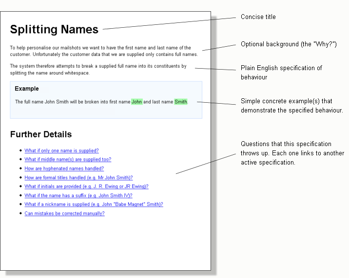
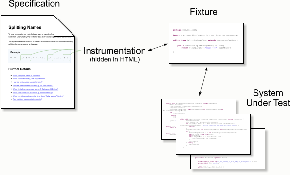

Concordion is an open source tool for automating
Specification by Example*
* There are versions for Java, .NET, Python,
Fantom, Scala, and Ruby. [supported platforms]
Key Features
-
Specifications become living documentation Concordion specifications are so readable they can double up as system documentation. They are written in HTML, so can be easily hyperlinked into a navigable structure.
The specifications contain examples of behaviour which, when automated and executed against your system, are colour-coded by Concordion to show whether the examples are working. By executing these frequently, you can be confident your documentation is always up-to-date with your system.
-
Helps you to separate "what?" from "how?" Specifications that include a lot of implementation detail lock you into that implementation. Concordion helps you to document the logic and behaviour of your system in a way that gives you the flexibility to change the implementation later on.
-
Purposely small command-set is simple to learn Concordion based on specification by example has been designed with a short learning-curve as a top priority. Automated examples are executed as JUnit tests, which makes them easy to run and easy to include in an existing project build.
-
Powerful extension framework for customisation While the core features are kept deliberately small, the extensions API allows you to add functionality. For example, using Excel spreadsheets as specifications, adding screenshots to the output, displaying logging information, and much more.
What's special about it?
Normal language, no need for structured "given/when/then"
Rather than forcing product owners to use a specially structured language for specification by example, Concordion lets you write the specifications in normal language using paragraphs, tables and proper punctuation. This makes them much more natural to read and write, and helps everyone understand and agree about what a feature is supposed to do.
Attractive output
Concordion specifications are written in HTML with an attractive stylesheet that makes them nice to read, and suitable for internal or even external documentation. You can use HTML features such as hyperlinks and images to make the pages even more useful.
For an example, see Concordion's own specifications.
Always bang up-to-date
Concordion specifications are active. Behind the scenes, they are linked to the system under test and therefore do not go out-of-date. If a change is made to the system's behaviour then the tests associated with the relevant specification will fail and let you know.

Complex behaviours can be decomposed
Each question at the bottom of the specification links to another active specification and so on until you have either run out of questions or the answer is "Out of Scope". In this way, a complex behaviour can be broken down into small, focused and easily understood requirements.
How it Works

Specifications with examples are written in simple HTML. Developers instrument the concrete examples in each specification with commands (e.g. "set", "execute", "assertEquals") that allow the examples to be checked against a real-life system.
The instrumentation is invisible to a browser, but is processed by a Java fixture class that accompanies the specification and acts as a buffer between the specification and the system under test. The fixture is also a JUnit test case, so it's easy to run and integrate into an automated build. The results of running the examples are exported with green and red indicating successes and failures.
Some example instrumentation:
<p>
When <span concordion:set="#firstName">Bob</span> logs in a greeting
<span concordion:assertEquals="greetingFor(#firstName)">Hello Bob!</span>
should be displayed.
</p>
Technique
With the right technique, active specifications can boost agility and make it easier to sustain a test-driven approach.
Separating requirements from implementation helps refactoring
Hiding all the implementation-specific detail inside the Java fixture code gives you freedom to change the internal design of your application confident that you'll catch inadvertent changes to required behaviour. The specifications don't change when you refactor.
One problem with unit tests is that they mix together customer requirements with tests of internal classes. With active specifications you make a clear distinction and it's much easier to know what's truly important and what can be changed. The specifications describe the customer requirements whereas the test fixtures verify internal implementation.
Specifications can be as thorough as unit tests
Specifications can cover every nuance of behaviour that is important to the customer. There is no reason why the specifications cannot do this to the same depth as JUnit tests. But instead of the onus being on the developer to think up all the fine-detail tests, with active specifications, testers and analysts can also get involved.
Specifications can be hooked in at different levels
The fixture code can be hooked in at unit, component, sub-system or system level depending on the level of confidence required traded against speed of test execution. The decision does not affect the specifications themselves. They just describe the behaviour without explaining how it's implemented or how to test it.
Agreeing details up-front allows finer control over scope
Active specifications can be used to define detailed acceptance criteria for a story. This allows the product owner to make decisions about scope and behaviour that would otherwise be left to the programmers. This reduces gold-plating and allows the product owner to make conscious trade-offs of scope against development cost. E.g. "Let's not handle this [edge case] in this iteration as it's very unlikely to happen, and there are other stories that I want implemented that offer more value".
Test coverage no longer relies on developer self-discipline
Automated unit tests, written by developers, are at the heart of most traditional agile approaches. Unfortunately, because unit tests are neither visible to management nor the product owner, there's always a feeling of pressure to cut corners for short-term gains in development speed. In the long-term this can be fatal for agility, but it takes constant willpower to resist the temptation and many agile projects eventually succumb.
Driving a project with active specifications reduces this problem. Since the specifications are written in plain language, not only are they readable and visible outside of the development team, but they are also co-authored with the product owner and testers. Keeping the quality high becomes a group effort.
Developers may continue to write some unit tests to drive aspects of the internal design but the project no longer relies on them for test coverage of external behaviour. The active specifications take over that role. Since writing the specifications is at the core of the visible process – nothing is developed without active specifications describing the requirements – it becomes practically impossible to cut corners.
Where is Concordion suitable and not suitable?
No product is perfect for everyone and Concordion is no exception.
Concordion is not a tester-only tool
Concordion is not suitable for testers who don't have access to developers or development skills. The specifications can be written by non-developers, but the instrumentation and fixture code require Java programming ability.
The idea behind the product is to allow (non-developer) testers and developers to collaborate in a way that draws on the strengths of both without needing to step on each others toes.
It can, however, be used by developers on their own, as an alternative to writing JUnit tests. The advantage of doing this, is that helps to separate the two concerns: separating the requirements from the implementation.
Concordion specifications are written in HTML
Only a very small subset of HTML is needed (<p>, <table>, <b>), however, some people may be intimidated by it or not want to write in HTML.
Sometimes developers imagine that testers or business analysts won't want to learn to write HTML, but in reality it's not a problem. The crash course, below, describes enough HTML for writing the majority of specifications and takes most people only a few minutes to get their head round.
If for some reason, it's not possible to persuade a tester or analyst to write in HTML, workable alternatives are for developers to sit with the analysts and testers and "do the typing" (i.e. write the basic HTML for them) or to take or accept notes in other formats and write them up in HTML.
HTML documents are written in text with special start and end tags around items. For example:
<p>This is a
paragraph</p>The tag <p> signals the start of the paragraph and </p> signals the end.
You can nest tags.
<p>This is <b>bold
text</b> in a paragraph</p>When the document is displayed in a web browser, it will be rendered like this:
The syntax for a table is more complicated, but once you understand this, you'll have everything you need to write tests in Concordion.
A table uses the following tags: <table>, <tr> (table row) , <th> (table heading), <td> (table data). The table is expressed row by row. The first row contains the headings, the following rows are data. For example:
<table>
<tr>
<th>Name</th>
<th>Age</th>
</tr>
<tr>
<td>Fred Flintstone</td>
<td>35</td>
</tr>
<tr>
<td>Betty Rubble</td>
<td>27</td>
</tr>
</table>
Which produces:
| Name | Age |
|---|---|
| Fred Flintstone | 35 |
| Betty Rubble | 27 |
Spelling of Concordion
Several people said they couldn't find this page when they searched because they were spelling "Concordion" as concordium, concordian. Hopefully, now we have written the words Concordium and Concordian on this page the search engines will find it even with the misspelling.